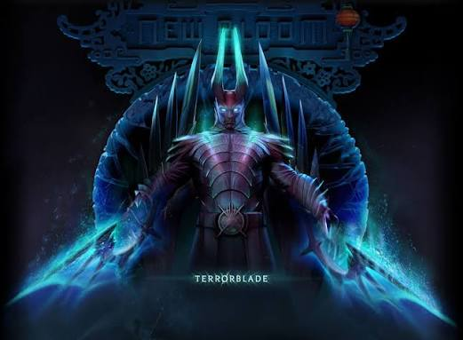
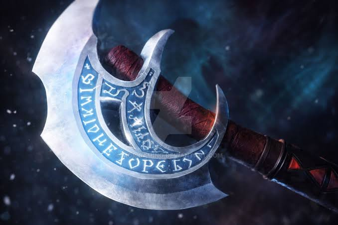
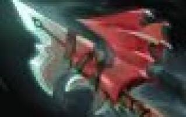
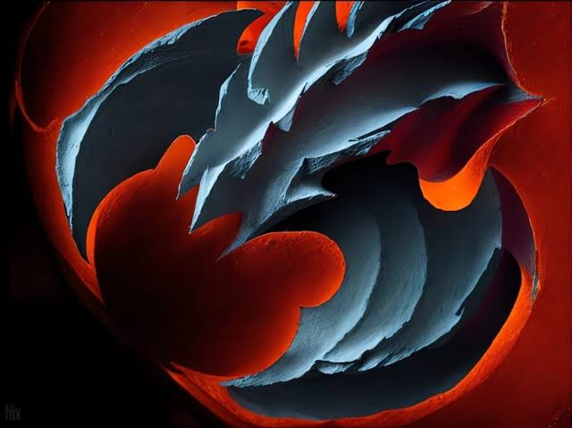
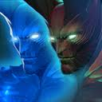
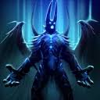
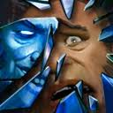
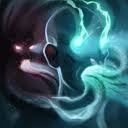

Tier SРазрушительная мощь темного отражения
В актуальной мете Dota 2 Terrorblade является одним из самых быстрофармящих и смертоносных персонажей. За счет высокой базовой брони и возможности отправлять сильные иллюзии Conjure Image на фарм опасных участков карты, он способен быстро выходить в ключевые слоты, а форма Metamorphosis превращает его в сильнейшего дальнобойного осадного демона.
Сборка артефактов Pro Tracker Meta Build

Power Treads
Основа для разгона фарма. Иллюзии копируют белую ловкость от сапога, давая огромную прибавку к скорости атаки и урону.

Manta Style
Критически необходимый артефакт. Снимает с героя безмолвие, а призванные иллюзии в сочетании с формой Metamorphosis способны за секунды снести строения врага.

Eye of Skadi
Дает колоссальные характеристики силы, ловкости и интеллекта. Замедляет врагов при атаке из дальнобойной формы и режет их лечение.

Black King Bar
Защита от магического контроля. Позволяет беспрепятственно расстреливать цели в драке и вовремя нажать ультимейт на лоу-хп.

Satanic
Дополнительная плотность и моментальный подъем здоровья. Отлично комбинируется со стилем игры Романа, когда нужно выдержать первый фокус врага.
Приоритет способностей Skill Progression

Conjure Image MAX 1
Призыв иллюзий. Основное умение для постоянного сплит-пуша линий и одновременного фарма лесных лагерей.

Metamorphosis MAX 2
Превращение в демона с огромной дальностью атаки и бонусным уроном. Ключевая способность для драк и сноса вышек.

Reflection Lvl 1
Замедление врагов и создание их неуязвимых копий. Отлично ломает позиционку и пассивки вражеским керри в начале драки.

Sunder ULT (Lvl 3)
Обмен процентами здоровья с союзником или врагом. Позволяет перевернуть исход даже самой проигранной дуэли.